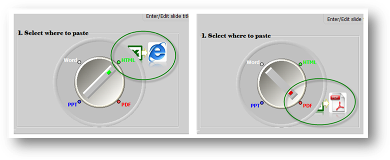
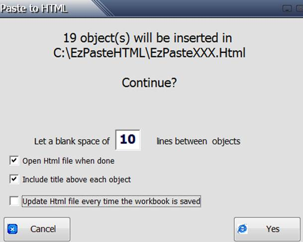
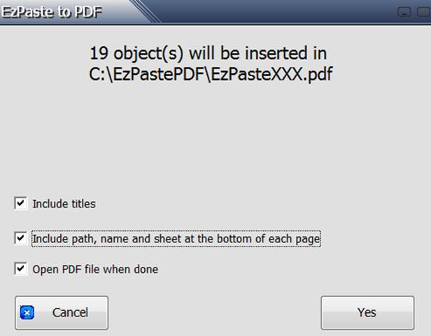

Besides the PowerPoint and Word destinations, EzPaste could also easily export the selected objects to an HTML file or to a PDF document (no special driver required), by simply adjusting the knob in the main form

In HTML destination, a dialog form will be displayed indicating where the HTML file is located and performing some customization such as enabling the automatic refreshing of the file every time the source Excel file is updated and saved, a feature whih could useful for maintaining an updated site

In PDF destination, a dialog form will be displayed indicating where the PDF file is located and performing some customization
